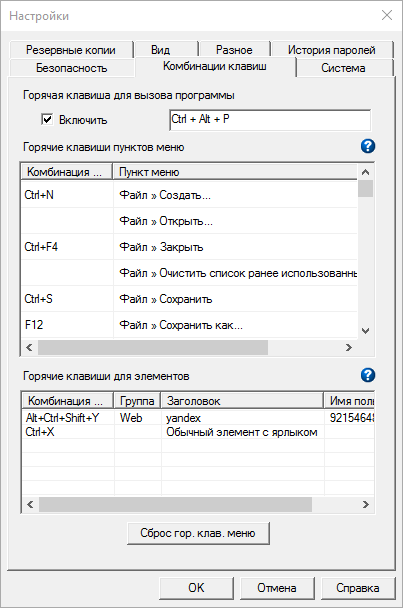

 Password Safe позволяет определить комбинации клавиш (горячие клавиши) для выполнения различных действий внутри приложения. Здесь вы можете управлять назначением клавиатурных комбинаций.
Горячая клавиша для вызова программы
Если выбрано, указанная комбинация клавиш будет использована для восстановления Password Safe из скрытого состояния, или помещения его окна на передний план, когда оно перекрыто другими окнами. Комбинация клавиш может быть изменена при установке флажка для данной настройки.
Горячие клавиши пунктов меню
Чтобы изменить или задать комбинацию клавиш, выберите строку с необходимым действием и щёлкните в поле «Комбинация...». Выбранная комбинация клавиш будет назначена для вызова данного действия. Например, для вызова диалога с информацией о файле по комбинации «Control+Alt+p», выберите строку "Файл » Свойства", щёлкните в поле «Комбинация» и затем нажмите клавиши «Control», «Alt» и «p». Текст «Ctrl+Alt+P» появится в поле «Комбинация...» выбранной строки. Изменения вступят в силу после нажатия «OK». Подробнее о том, какие комбинации можно (или нельзя) использовать для назначения «горячих клавиш» см. здесь.
Вы можете задать комбинацию там, где она ещё не определена, или изменить ранее заданную комбинацию. Комбинации клавиш сохраняются в файле настроек и будут доступны при последующих запусках Password Safe.
Для отмены указанного сочетания клавиш, или возврата к значению по умолчанию, щёлкните правой кнопкой мыши в поле «Комбинация...». В отображённом контекстном меню можно будет выбрать требуемое действие. Для возврата всем действиям комбинаций клавиш, заданных по умолчанию, нажмите на кнопку «Сбросить горячие клавиши меню».
Горячие клавиши для элементов
В данной таблице указаны горячие клавиши, связанные с элементами текущего контейнера. Они задаются в диалоге редактирования элемента на складке Дополнительно. Для редактирования комбинации клавиш элемента щёлкните дважды на соответствующей строке. Будет открыт диалог редактирования элемента.